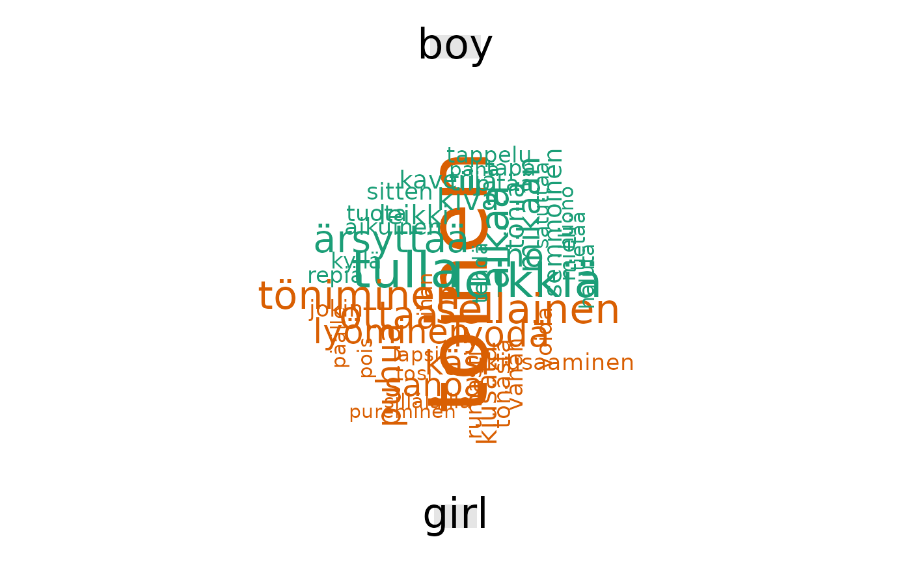

Make comparison cloud
fst_comparison_cloud.RdCreates a comparison wordcloud showing words that occur differently between each group.
Usage
fst_comparison_cloud(
data1,
data2,
data3 = NULL,
data4 = NULL,
name1 = "Group 1",
name2 = "Group 2",
name3 = "Group 3",
name4 = "Group 4",
pos_filter = NULL,
max = 100
)Arguments
- data1
A dataframe of text in CoNLL-U format for the first group.
- data2
A dataframe of text in CoNLL-U format for the second group.
- data3
An optional dataframe of text in CoNLL-U format for the third group, default is `NULL`.
- data4
An optional dataframe of text in CoNLL-U format for the fourth group, default is `NULL`.
- name1
A string describing data1, default is `Group 1`.
- name2
A string describing data2, default is `Group 2`.
- name3
A string describing data3, default is `Group 3`.
- name4
A string describing data4, default is `Group 4`.
- pos_filter
List of UPOS tags for inclusion, default is `NULL` which means all word types included.
- max
The maximum number of words to display, default is `100`.
Examples
d1 <- conllu_dev_q11_1_nltk
d2 <- conllu_dev_q11_3_nltk
pf1 <- c("NOUN", "VERB", "ADJ", "ADV")
fst_comparison_cloud(d1, d2, pos_filter = pf1)
#> Notes on use of fst_comparison_cloud:
#> If `max` is large, you may receive "warnings" indicating any words which are not plotted due to space constraints.
#>
#> Note:
#> Consider whether your data is balanced between groups being compared and whether each group contains enough data for analysis.
#> The number of responded in each group (including 'NAs') are listed below:
#> Group 1=945, Group 2=945
#>

f <- conllu_dev_q11_1_f_nltk
m <- conllu_dev_q11_1_m_nltk
na <- conllu_dev_q11_1_na_nltk
n1 <- "Female"
n2 <- "Male"
n3 <- "NA"
fst_comparison_cloud(f, m, na, name1 = n1, name2 = n2, name3 = n3, max = 400)
#> Notes on use of fst_comparison_cloud:
#> If `max` is large, you may receive "warnings" indicating any words which are not plotted due to space constraints.
#>
#> Note:
#> Consider whether your data is balanced between groups being compared and whether each group contains enough data for analysis.
#> The number of responded in each group (including 'NAs') are listed below:
#> Female=673, Male=183, NA=89
#>
#> Warning: vastata could not be fit on page. It will not be plotted.
#> Warning: kunnolla could not be fit on page. It will not be plotted.
#> Warning: tapahtua could not be fit on page. It will not be plotted.
#> Warning: länsima could not be fit on page. It will not be plotted.
#> Warning: teollisuusma could not be fit on page. It will not be plotted.
#> Warning: perustarve could not be fit on page. It will not be plotted.
#> Warning: länsimainen could not be fit on page. It will not be plotted.
#> Warning: hyvinvointiyhteiskunta could not be fit on page. It will not be plotted.
#> Warning: itsenäisesti could not be fit on page. It will not be plotted.
#> Warning: eirittäin could not be fit on page. It will not be plotted.
#> Warning: hyvinvoinni could not be fit on page. It will not be plotted.
#> Warning: idiootti could not be fit on page. It will not be plotted.
#> Warning: ihmisarvoinen could not be fit on page. It will not be plotted.
#> Warning: ihmisoikeis could not be fit on page. It will not be plotted.
#> Warning: ihmisoikeusasia could not be fit on page. It will not be plotted.
#> Warning: ihmisoikeusasioi could not be fit on page. It will not be plotted.
#> Warning: ihmisoikeusrikos could not be fit on page. It will not be plotted.
#> Warning: ihmisyysongelma could not be fit on page. It will not be plotted.
#> Warning: johtua could not be fit on page. It will not be plotted.
#> Warning: järjestelmällisesti could not be fit on page. It will not be plotted.
#> Warning: keskuudessa could not be fit on page. It will not be plotted.
#> Warning: kouluttautua could not be fit on page. It will not be plotted.
#> Warning: kärsi could not be fit on page. It will not be plotted.
#> Warning: laatuinen could not be fit on page. It will not be plotted.
#> Warning: lastenkengi could not be fit on page. It will not be plotted.
#> Warning: littyvissä could not be fit on page. It will not be plotted.
#> Warning: läntinen could not be fit on page. It will not be plotted.
#> Warning: lääkkeitäq could not be fit on page. It will not be plotted.
#> Warning: muuttaa could not be fit on page. It will not be plotted.
#> Warning: määräämä could not be fit on page. It will not be plotted.
#> Warning: nostaa could not be fit on page. It will not be plotted.
#> Warning: näkökulma could not be fit on page. It will not be plotted.
#> Warning: olettaa could not be fit on page. It will not be plotted.
#> Warning: olko could not be fit on page. It will not be plotted.
#> Warning: olla. could not be fit on page. It will not be plotted.
#> Warning: opetus could not be fit on page. It will not be plotted.
#> Warning: palvella could not be fit on page. It will not be plotted.
#> Warning: perustaa could not be fit on page. It will not be plotted.
#> Warning: perustarpei could not be fit on page. It will not be plotted.
#> Warning: poljeta could not be fit on page. It will not be plotted.
#> Warning: rakennuksellinen could not be fit on page. It will not be plotted.
#> Warning: sivistyne could not be fit on page. It will not be plotted.
#> Warning: syntyä could not be fit on page. It will not be plotted.
#> Warning: tietoisuus could not be fit on page. It will not be plotted.
#> Warning: toimimattomuus could not be fit on page. It will not be plotted.
#> Warning: tolalla could not be fit on page. It will not be plotted.
#> Warning: varallisuusero could not be fit on page. It will not be plotted.
#> Warning: yhteikunnallinen could not be fit on page. It will not be plotted.
#> Warning: äärirajoilla could not be fit on page. It will not be plotted.
#> Warning: inhimillinen could not be fit on page. It will not be plotted.
#> Warning: keskimäärin could not be fit on page. It will not be plotted.
#> Warning: kunto could not be fit on page. It will not be plotted.
#> Warning: kehittyne could not be fit on page. It will not be plotted.
#> Warning: enemmän could not be fit on page. It will not be plotted.
#> Warning: hankaloittaa could not be fit on page. It will not be plotted.
#> Warning: infastruktuuri could not be fit on page. It will not be plotted.
#> Warning: kehity could not be fit on page. It will not be plotted.
#> Warning: näin could not be fit on page. It will not be plotted.
#> Warning: pieni could not be fit on page. It will not be plotted.
#> Warning: potentiaali could not be fit on page. It will not be plotted.
#> Warning: pääosa could not be fit on page. It will not be plotted.
#> Warning: saatavuus could not be fit on page. It will not be plotted.
#> Warning: sellainen could not be fit on page. It will not be plotted.
#> Warning: talous- could not be fit on page. It will not be plotted.
#> Warning: tarvitsla could not be fit on page. It will not be plotted.
#> Warning: tasapainoinen could not be fit on page. It will not be plotted.
#> Warning: useimmiten could not be fit on page. It will not be plotted.
#> Warning: ulkopuolinen could not be fit on page. It will not be plotted.
#> Warning: alikehittyä could not be fit on page. It will not be plotted.
#> Warning: huonostaa could not be fit on page. It will not be plotted.
#> Warning: jokapäiväinen could not be fit on page. It will not be plotted.
#> Warning: kaivata could not be fit on page. It will not be plotted.
#> Warning: kehityä could not be fit on page. It will not be plotted.
#> Warning: kuulua could not be fit on page. It will not be plotted.
#> Warning: onnellinen could not be fit on page. It will not be plotted.
#> Warning: sosiaalinen could not be fit on page. It will not be plotted.
#> Warning: teollinen could not be fit on page. It will not be plotted.
#> Warning: nälkä could not be fit on page. It will not be plotted.
#> Warning: perusoikeus could not be fit on page. It will not be plotted.
#> Warning: välttämättä could not be fit on page. It will not be plotted.
#> Warning: yrittää could not be fit on page. It will not be plotted.
#> Warning: juomavesi could not be fit on page. It will not be plotted.
#> Warning: suomi could not be fit on page. It will not be plotted.
#> Warning: ongelma could not be fit on page. It will not be plotted.
#> Warning: aliravitseisuus could not be fit on page. It will not be plotted.
#> Warning: bruttokansantuote could not be fit on page. It will not be plotted.
#> Warning: nopea could not be fit on page. It will not be plotted.
#> Warning: pysyä could not be fit on page. It will not be plotted.
#> Warning: huonoissa could not be fit on page. It will not be plotted.
#> Warning: vähemmän could not be fit on page. It will not be plotted.
#> Warning: heiko could not be fit on page. It will not be plotted.
#> Warning: lapsikuolleisuus could not be fit on page. It will not be plotted.
#> Warning: parantaa could not be fit on page. It will not be plotted.
#> Warning: eliniänodote could not be fit on page. It will not be plotted.
#> Warning: huonolla could not be fit on page. It will not be plotted.
#> Warning: puuttua could not be fit on page. It will not be plotted.
#> Warning: esim could not be fit on page. It will not be plotted.
#> Warning: kesken could not be fit on page. It will not be plotted.
#> Warning: kyetä could not be fit on page. It will not be plotted.
#> Warning: perusedellytys could not be fit on page. It will not be plotted.
#> Warning: selvästi could not be fit on page. It will not be plotted.
#> Warning: hyvinvointivaltioissa could not be fit on page. It will not be plotted.
#> Warning: kehittäminen could not be fit on page. It will not be plotted.
#> Warning: teollistunei could not be fit on page. It will not be plotted.
#> Warning: terveydenhuollo could not be fit on page. It will not be plotted.
#> Warning: kehitysmaa could not be fit on page. It will not be plotted.
#> Warning: perustarpe could not be fit on page. It will not be plotted.
#> Warning: tasa-arvo could not be fit on page. It will not be plotted.
#> Warning: 'kehittynei could not be fit on page. It will not be plotted.
#> Warning: -ekonominen could not be fit on page. It will not be plotted.
#> Warning: alhaineinen could not be fit on page. It will not be plotted.
#> Warning: alikehittyineä could not be fit on page. It will not be plotted.
#> Warning: asettaa could not be fit on page. It will not be plotted.
#> Warning: asukkainen could not be fit on page. It will not be plotted.
#> Warning: byrokratia could not be fit on page. It will not be plotted.
#> Warning: eletäolla could not be fit on page. It will not be plotted.
#> Warning: elinajanodote could not be fit on page. It will not be plotted.
#> Warning: elinkeinoelämä could not be fit on page. It will not be plotted.
#> Warning: elinkeinorakens could not be fit on page. It will not be plotted.
#> Warning: elämisentaso could not be fit on page. It will not be plotted.
#> Warning: epävakaa could not be fit on page. It will not be plotted.
#> Warning: eteläinen could not be fit on page. It will not be plotted.
#> Warning: hallinno could not be fit on page. It will not be plotted.
#> Warning: hd-indi could not be fit on page. It will not be plotted.
#> Warning: hdi-indi could not be fit on page. It will not be plotted.
#> Warning: helvetti could not be fit on page. It will not be plotted.
#> Warning: hengissä could not be fit on page. It will not be plotted.
#> Warning: hitaammin could not be fit on page. It will not be plotted.
#> Warning: hyvinvointitaso could not be fit on page. It will not be plotted.
#> Warning: ihailtava could not be fit on page. It will not be plotted.
#> Warning: indikaattorei could not be fit on page. It will not be plotted.
#> Warning: infrakstruktuuri could not be fit on page. It will not be plotted.
#> Warning: jossain could not be fit on page. It will not be plotted.
#> Warning: julkinen could not be fit on page. It will not be plotted.
#> Warning: jälkeenjäää could not be fit on page. It will not be plotted.
#> Warning: järjestää could not be fit on page. It will not be plotted.
#> Warning: kansalais could not be fit on page. It will not be plotted.
#> Warning: kansantalous could not be fit on page. It will not be plotted.
#> Warning: kasvaa could not be fit on page. It will not be plotted.
#> Warning: kauniisti could not be fit on page. It will not be plotted.
#> Warning: kehittymättöä could not be fit on page. It will not be plotted.
#> Warning: kehittynyt” could not be fit on page. It will not be plotted.
#> Warning: kehityksestä' could not be fit on page. It will not be plotted.
#> Warning: kehitysapu could not be fit on page. It will not be plotted.
#> Warning: kehitysaste could not be fit on page. It will not be plotted.
#> Warning: keskittyä could not be fit on page. It will not be plotted.
#> Warning: kukoistaa could not be fit on page. It will not be plotted.
#> Warning: kuolleisuus could not be fit on page. It will not be plotted.
#> Warning: kuvata could not be fit on page. It will not be plotted.
#> Warning: köyhitä could not be fit on page. It will not be plotted.
#> Warning: lapsiluku could not be fit on page. It will not be plotted.
#> Warning: läiminlyötyjä could not be fit on page. It will not be plotted.
#> Warning: länsimaalas could not be fit on page. It will not be plotted.
#> Warning: länsimailla could not be fit on page. It will not be plotted.
#> Warning: maissa' could not be fit on page. It will not be plotted.
#> Warning: mielekkäänen could not be fit on page. It will not be plotted.
#> Warning: monesti could not be fit on page. It will not be plotted.
#> Warning: määritelmä could not be fit on page. It will not be plotted.
#> Warning: nallekarkki could not be fit on page. It will not be plotted.
#> Warning: neekere could not be fit on page. It will not be plotted.
#> Warning: nykyinen could not be fit on page. It will not be plotted.
#> Warning: näkökulmasta could not be fit on page. It will not be plotted.
#> Warning: ongelmista could not be fit on page. It will not be plotted.
#> Warning: osaaminen could not be fit on page. It will not be plotted.
#> Warning: palautua could not be fit on page. It will not be plotted.
#> Warning: pallonpuolisko could not be fit on page. It will not be plotted.
#> Warning: parannettava could not be fit on page. It will not be plotted.
#> Warning: pohjois-amerikka could not be fit on page. It will not be plotted.
#> Warning: puutte could not be fit on page. It will not be plotted.
#> Warning: päin could not be fit on page. It will not be plotted.
#> Warning: raaka-aine could not be fit on page. It will not be plotted.
#> Warning: rahatomi could not be fit on page. It will not be plotted.
#> Warning: rajoittaa could not be fit on page. It will not be plotted.
#> Warning: rakentaminen could not be fit on page. It will not be plotted.
#> Warning: riistokulttuuri could not be fit on page. It will not be plotted.
#> Warning: rikkainen could not be fit on page. It will not be plotted.
#> Warning: runsaasti could not be fit on page. It will not be plotted.
#> Warning: sanoa could not be fit on page. It will not be plotted.
#> Warning: selvittää could not be fit on page. It will not be plotted.
#> Warning: selvä could not be fit on page. It will not be plotted.
#> Warning: siirtoma could not be fit on page. It will not be plotted.
#> Warning: sinällään could not be fit on page. It will not be plotted.
#> Warning: slummi could not be fit on page. It will not be plotted.
#> Warning: sorreta could not be fit on page. It will not be plotted.
#> Warning: sosio could not be fit on page. It will not be plotted.
#> Warning: subjektiivinen could not be fit on page. It will not be plotted.
#> Warning: summittaisesti could not be fit on page. It will not be plotted.
#> Warning: suomalainen could not be fit on page. It will not be plotted.
#> Warning: takia could not be fit on page. It will not be plotted.
#> Warning: tarpeinen could not be fit on page. It will not be plotted.
#> Warning: tarvitsemaa could not be fit on page. It will not be plotted.
#> Warning: tasan could not be fit on page. It will not be plotted.
#> Warning: taulous could not be fit on page. It will not be plotted.
#> Warning: tekijä could not be fit on page. It will not be plotted.
#> Warning: teknologinen could not be fit on page. It will not be plotted.
#> Warning: teollistuminen could not be fit on page. It will not be plotted.
#> Warning: teollistuneinen could not be fit on page. It will not be plotted.
#> Warning: toiminto could not be fit on page. It will not be plotted.
#> Warning: tulevaisuus could not be fit on page. It will not be plotted.
#> Warning: tuotanto could not be fit on page. It will not be plotted.
#> Warning: turvallisuus could not be fit on page. It will not be plotted.
#> Warning: tyydyttyminen could not be fit on page. It will not be plotted.
#> Warning: ulkopuolistatuki could not be fit on page. It will not be plotted.
#> Warning: uuskolonialismi could not be fit on page. It will not be plotted.
#> Warning: vaikeus could not be fit on page. It will not be plotted.
#> Warning: valmis could not be fit on page. It will not be plotted.
#> Warning: vaurastuminen could not be fit on page. It will not be plotted.
#> Warning: vauraus could not be fit on page. It will not be plotted.
#> Warning: yhteiskunnalinen could not be fit on page. It will not be plotted.
#> Warning: yllä could not be fit on page. It will not be plotted.
#> Warning: ylläpitää could not be fit on page. It will not be plotted.
#> Warning: yläpuolella could not be fit on page. It will not be plotted.
#> Warning: ”alikehittynyt” could not be fit on page. It will not be plotted.
#> Warning: ”vähemmä could not be fit on page. It will not be plotted.
#> Warning: kehittyä could not be fit on page. It will not be plotted.
#> Warning: huonosti could not be fit on page. It will not be plotted.
#> Warning: elinolosuhe could not be fit on page. It will not be plotted.
#> Warning: elämänlaatu could not be fit on page. It will not be plotted.
#> Warning: entinen could not be fit on page. It will not be plotted.
#> Warning: epäkohta could not be fit on page. It will not be plotted.
#> Warning: erityisesti could not be fit on page. It will not be plotted.
#> Warning: eurooppa could not be fit on page. It will not be plotted.
#> Warning: heikosti could not be fit on page. It will not be plotted.
#> Warning: huomattava could not be fit on page. It will not be plotted.
#> Warning: imperialisma could not be fit on page. It will not be plotted.
#> Warning: itsestäänselvyys could not be fit on page. It will not be plotted.
#> Warning: joko could not be fit on page. It will not be plotted.
#> Warning: jäljä could not be fit on page. It will not be plotted.
#> Warning: jäädä could not be fit on page. It will not be plotted.
#> Warning: katsoa could not be fit on page. It will not be plotted.
#> Warning: kehittymätön could not be fit on page. It will not be plotted.
#> Warning: kehitysvaihe could not be fit on page. It will not be plotted.
#> Warning: levottomuus could not be fit on page. It will not be plotted.
#> Warning: merkittävä could not be fit on page. It will not be plotted.
#> Warning: osata could not be fit on page. It will not be plotted.
#> Warning: parannettaa could not be fit on page. It will not be plotted.
#> Warning: paremmin could not be fit on page. It will not be plotted.
#> Warning: paskasti could not be fit on page. It will not be plotted.
#> Warning: päivä could not be fit on page. It will not be plotted.
#> Warning: resurssi could not be fit on page. It will not be plotted.
#> Warning: standardi could not be fit on page. It will not be plotted.
#> Warning: teollistua could not be fit on page. It will not be plotted.
#> Warning: toinen could not be fit on page. It will not be plotted.
#> Warning: tosin could not be fit on page. It will not be plotted.
#> Warning: toteutumis could not be fit on page. It will not be plotted.
#> Warning: tuottaa could not be fit on page. It will not be plotted.
#> Warning: vaara could not be fit on page. It will not be plotted.
#> Warning: vaatia could not be fit on page. It will not be plotted.
#> Warning: vakava could not be fit on page. It will not be plotted.
#> Warning: yhteiskuntajärjestelmä could not be fit on page. It will not be plotted.
 fst_comparison_cloud(f, m, na, name1 = n1, name2 = n2, name3 = n3, max = 100)
#> Notes on use of fst_comparison_cloud:
#> If `max` is large, you may receive "warnings" indicating any words which are not plotted due to space constraints.
#>
#> Note:
#> Consider whether your data is balanced between groups being compared and whether each group contains enough data for analysis.
#> The number of responded in each group (including 'NAs') are listed below:
#> Female=673, Male=183, NA=89
#>
#> Warning: mahdollisuus could not be fit on page. It will not be plotted.
#> Warning: kehittynei could not be fit on page. It will not be plotted.
#> Warning: koulutustaso could not be fit on page. It will not be plotted.
#> Warning: kehitettää could not be fit on page. It will not be plotted.
#> Warning: länsimainen could not be fit on page. It will not be plotted.
#> Warning: hyvinvointiyhteiskunta could not be fit on page. It will not be plotted.
#> Warning: huonoimpi could not be fit on page. It will not be plotted.
#> Warning: hyvinvoinni could not be fit on page. It will not be plotted.
#> Warning: ihmisoikeusasia could not be fit on page. It will not be plotted.
#> Warning: ihmisyysongelma could not be fit on page. It will not be plotted.
#> Warning: järjestelmällisesti could not be fit on page. It will not be plotted.
#> Warning: keskuudessa could not be fit on page. It will not be plotted.
#> Warning: lastenkengi could not be fit on page. It will not be plotted.
#> Warning: littyvissä could not be fit on page. It will not be plotted.
#> Warning: läntinen could not be fit on page. It will not be plotted.
#> Warning: palvella could not be fit on page. It will not be plotted.
#> Warning: perustaa could not be fit on page. It will not be plotted.
#> Warning: perustarpei could not be fit on page. It will not be plotted.
#> Warning: tueta could not be fit on page. It will not be plotted.
#> Warning: yhteikunnallinen could not be fit on page. It will not be plotted.
#> Warning: äärirajoilla could not be fit on page. It will not be plotted.
fst_comparison_cloud(f, m, na, name1 = n1, name2 = n2, name3 = n3, max = 100)
#> Notes on use of fst_comparison_cloud:
#> If `max` is large, you may receive "warnings" indicating any words which are not plotted due to space constraints.
#>
#> Note:
#> Consider whether your data is balanced between groups being compared and whether each group contains enough data for analysis.
#> The number of responded in each group (including 'NAs') are listed below:
#> Female=673, Male=183, NA=89
#>
#> Warning: mahdollisuus could not be fit on page. It will not be plotted.
#> Warning: kehittynei could not be fit on page. It will not be plotted.
#> Warning: koulutustaso could not be fit on page. It will not be plotted.
#> Warning: kehitettää could not be fit on page. It will not be plotted.
#> Warning: länsimainen could not be fit on page. It will not be plotted.
#> Warning: hyvinvointiyhteiskunta could not be fit on page. It will not be plotted.
#> Warning: huonoimpi could not be fit on page. It will not be plotted.
#> Warning: hyvinvoinni could not be fit on page. It will not be plotted.
#> Warning: ihmisoikeusasia could not be fit on page. It will not be plotted.
#> Warning: ihmisyysongelma could not be fit on page. It will not be plotted.
#> Warning: järjestelmällisesti could not be fit on page. It will not be plotted.
#> Warning: keskuudessa could not be fit on page. It will not be plotted.
#> Warning: lastenkengi could not be fit on page. It will not be plotted.
#> Warning: littyvissä could not be fit on page. It will not be plotted.
#> Warning: läntinen could not be fit on page. It will not be plotted.
#> Warning: palvella could not be fit on page. It will not be plotted.
#> Warning: perustaa could not be fit on page. It will not be plotted.
#> Warning: perustarpei could not be fit on page. It will not be plotted.
#> Warning: tueta could not be fit on page. It will not be plotted.
#> Warning: yhteikunnallinen could not be fit on page. It will not be plotted.
#> Warning: äärirajoilla could not be fit on page. It will not be plotted.